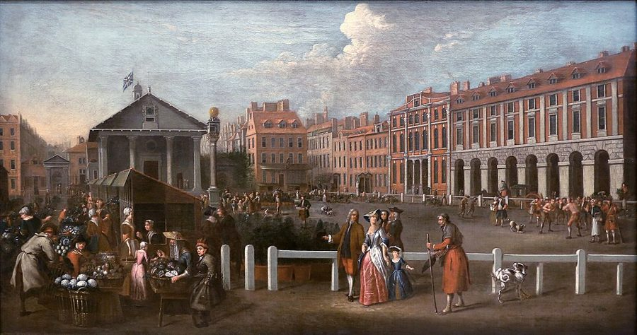
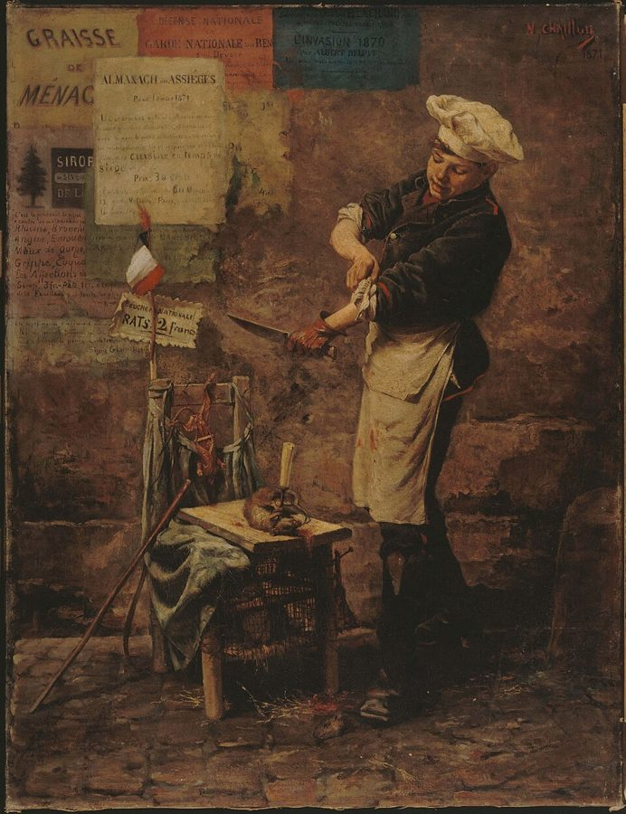
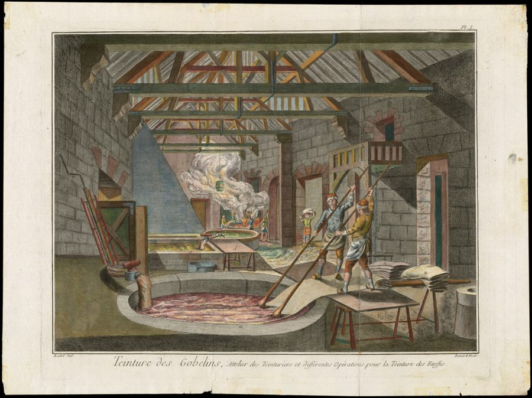

这一页在做什么
上一页把价格拆成了工资、利润、地租三块。这一页问：一件东西实际卖多少钱，为什么今天贵、明天贱，却又像被一根看不见的绳子拴着，跑不远？斯密在这里给出了全书第一套完整的价格理论，篇幅不长，后面讲工资、利润、地租、垄断，都站在它上面。读的时候抓两条线：价格偏离以后，是谁、靠什么把它拉回来；又是什么让它长期回不来。后一条，斯密第一次把矛头对准了垄断和行会。

读之前：这一页在全书的哪里
上一页（第 5、6 章）讲了衡量价格的尺子，又把价格分成工资、利润、地租三块。这一章把它们用起来：先定义一个「本来该是」的价格，再看实际价格怎样围着它转。章末斯密预告，接下来四章分别讲工资（第 8 章）、利润（第 9 章）、各行工资和利润的差别（第 10 章）、地租（第 11 章），也就是这个「本来该是」的价格本身又由什么定。这一章杨译只有五千来字，是卷一的枢纽。
一件东西的价格天天在变，它有没有一个「本来该是」的价格？偏离了，谁把它拉回来？什么又让它回不来？
斯密说垄断价格「每一次」都是能榨出来的最高价。今天看，这句说过了头：垄断者要在价格和销量之间掂量，不会把价定到最高。他说垄断限产抬价，这一点没错，见「对照今天」。
读的时候带着这几个问题。不用先找答案，读完回来对照「检查一下理解」。
- 一个穷人很想要一辆六匹马拉的大马车，斯密为什么说这不算「有效需求」？§1
- 价格高了，是谁把它拉回来的？斯密在这里有没有提到政府出手？§2
- 谷物和呢绒，同样没人捣乱，为什么一个价格年年大起大落，一个几乎不动？§2
- 秘密、葡萄园、垄断、行会，哪几种高价迟早会消失，哪几种可以「永远」？§3
这一页的路线
这一章像搭积木。先立两个定义：各行的工资、利润、地租在当时当地有个平均水平，按这个水平刚好付清三者的价格叫自然价格；实际成交的叫市场价格。然后是一组「如果」：到货少于有效需求，价格涨；多了，跌；正好，两者相等。接着把时间拉长：偏离会让一些人多挣、一些人少挣，地、劳动和资本进进出出，价格就被拉回中心，这里用了一个引力的比喻。读到第 17–19 段会觉得岔开了：谷物为什么波动大，波动又落在地租、工资、利润的哪一块上，国丧就是例子。后半章讲例外：哪些力量能让价格长期偏高，为什么很少长期偏低。
斯密落在哪：市场价格由到货量和有效需求的比例决定，在完全自由的条件下，总被拉向自然价格；能让它长期偏高的，除了少数天然的稀缺，多半是秘密、垄断和限制入行的法律；长期偏低则很难做到。
分节地图
这一页是卷一第 7 章，本站切成 4 节。粗体是本站起的节名；「杨译里找」后面是杨敬年译本里这一节开头附近的小标题或第一句，在电子书里搜它就能跳过去；灰色的英文是原文这一节开头的几个词。标「先读」的是最短读法，读完打个勾。
- 自然价格和想要一辆六马车普通或平均率；工资、利润THERE is in every society or …两个定义加一组「如果」。第 5 段说利润也是成本，第 8 段是六马车，第 10 段是橘子和旧铁。
- 价格的引力中心商品数量会自行适应有效需求The quantity of every commodity brought …全章的核心：偏离怎样被拉回，第 15 段是引力的比喻。第 17 段谷物对呢绒、第 19 段国丧，都很好看。
- 秘密、葡萄园和垄断但市场价格可以长期维持在自然价格之上But though the market price of …四种让价格长期偏高的力量，一种比一种持久。第 27 段垄断价格那句最常被引，也最常被挑错。
- 为什么很少长期偏低任何商品的市场价格虽可…The market price of any particular …第 30–31 段讲偏高能久、偏低难久，末尾拿印度和古埃及作比，值得有空读；第 32–37 段只是预告后四章。
先用中文过一遍：这一页的概念
先把这一页用到、斯密默认你懂的几个概念讲一遍。讲的是概念本身，斯密拿它推出什么，读原书时自己看。每个概念都有一句「今天」：今天的经济学怎么叫它、怎么看它。
§1自然价格（和自然率） natural price; natural rates
先说「自然率」：某时某地，干一种活一般拿多少工资，一笔资本一般赚多少利润，一块地一般收多少地租，这些平均水平斯密叫自然率。一件东西的售价如果刚好够按这些平均水平，付清种出来、做出来、运到市场所用的地租、工资和利润，就是它的自然价格。要紧的是，这里面已经含着卖主的「普通利润」：你开店的本钱放在别处也能生利，按进货价卖等于白忙，所以拿不到这份利润就是亏了。「自然」不是说天经地义，是说没人干扰时，价格会落在这里。
今天：大致是「长期均衡价格」，等于含正常利润的平均成本；「放在别处也能生利」今天叫机会成本。差别在于，今天认为成本本身随产量变，长期价格不只由成本定。
在这一页：第 1–6 段。三个组成部分从哪来，见页 03 的价格的三个组成部分。
§1市场价格 market price
实际成交的价格。它由两样东西的比例决定：真正运到市场上的数量，和愿意按自然价格买的人一共要多少（下一个概念）。到货少了，买不到的人宁可多出钱，互相抬价；到货多了，卖不掉的那部分只好低价卖给出价低的人，整批货的价格都被拉下来。涨多少、跌多少，斯密说看缺口多大、买主多有钱、这东西对他们多要紧、卖主多急着脱手：围城和饥荒时口粮贵得离谱；同样多运了一批，会烂的橘子比放得住的旧铁跌得狠。
今天：叫短期价格，由供求决定。斯密说的「或多或少」，今天用「价格弹性」来量：东西越要紧、越放不住，到货多一点少一点，价格动得越厉害。
在这一页：第 7–11 段。第 9 段围城，第 10 段橘子和旧铁。下面的模拟器就是让这个价格动起来。
§1有效需求 effectual demand
斯密分开两种「需求」。绝对需求是想要：一个穷人也许很想要一辆六匹马拉的大马车，可他付不起，没人会为他把马车造出来送到市场上。有效需求是愿意而且付得起自然价格的人要的量，它足以让东西真的被运到市场上来，effectual 就是「能办成事的」。注意它是一个数，不是一条线：斯密问的是「按自然价格，大家要多少」，没有问「便宜一点，大家会多要多少」。
今天：「想要」和「付得起」的区别今天照用。今天的需求是一条曲线，价格越低买得越多，古诺 1838 年最早写成函数。别和凯恩斯说的「有效需求」（全社会的总需求）混为一谈。
在这一页：第 8 段定义，六马车也在这一段。全章的「到货多了」「少了」，都是和它比。
§3垄断价格 price of monopoly
一家或几家卖主把别人挡在门外，就能故意让市场一直供不应求，把价格抬到自然价格以上，多出来的钱进了自己口袋。斯密拿它和自由竞争价格对比：一个是每一次都能从买主身上榨出的最高价，一个是卖主长期能接受、又不至于关门的最低价。他还把行会特权、学徒法这类限制入行人数的法律叫作「扩大了的垄断」：效果一样，程度轻一些，却能延续好几代人。
今天：从古诺 1838 年起，垄断理论说垄断者定的是让利润最大的价，不是最高价：价太高，买的人太少，反而赚得少。限产抬价这一点，斯密说对了。
在这一页：第 26–29 段。行会和学徒法详见页 08 的进入壁垒。
§4完全自由 perfect liberty
斯密挂在结论上的条件：每个人可以随意改行，把自己的地、劳动和资本投到任何一行。只有这样，价格低于自然价格时吃亏的人才能马上撤出，价格才会回升；价格高时，别人也才能挤进来。他在这一章两次挂上这个条件（第 6 段、第 30 段），全书还会反复用它。它说的不是「没有政府」，而是没有挡着人进出的特权和法规。
今天：接近「自由进入和退出」。经济学拿它当基准，把进入壁垒、转行和搬家的成本、信息不全，都当作偏离基准的原因来研究。
在这一页：第 6 段和第 30 段。第 31 段的行会和世袭职业，正是它的反例。
动手：模拟器
先猜：一种布的有效需求突然涨了一半，价格涨上去以后，是一直停在高处，还是会回来？要是回来，回得快慢取决于什么？换成有垄断、有行会，又会怎样？
价格的引力中心：涨上去，还回得来吗
一共 30 期，每期一个价格。「商品」选卖什么；「第 6 期发生什么」是一次冲击；「障碍」是斯密说的几种让价格回不去的力量；「进出快慢」是价格偏离时，别人挤进来或撤出去有多快。下面的按钮是几个现成的场景。
需要浏览器打开脚本才能运行。
- 试试看：点「需求涨了一半」。价格在第 6 期冲到 150，别人看到有钱赚就挤进来，到货增加，第 11 期回到 100 附近。把「进出快慢」拖到最快：第 7 期就跌到 94，冲过了头，比自然价格还低，第 8 期才稳住。拖到最慢，要到最后一期才回到 103 上下。
- 试试看：点「谷物：收成年年不同」。需求一点没变，价格却在 80 到 204 之间乱跳，因为同样多的人种地，收成一年好一年坏。把商品换成「呢绒」，线就平了。这就是第 17 段。
- 试试看：点「需求涨了一半」，再把「障碍」挨个换一遍：哪几种高价迟早会落回，哪几种一直下不来？再点「行会遇上衰落」：价格跌到 60，要到第 22 期才回到 100 附近；换成「完全自由」，第 12 期就回来了；换成「父业子承」，就再也回不来。
斯密只给了机制，没给数，也没有今天的需求曲线。为了让价格能动起来，本站定了几条规则：自然价格定为 100；价格 = 100 ×（有效需求 ÷ 到货量）的若干次方，呢绒缺一成大约涨一成，谷物涨得更凶（缺一成涨两成多，缺一半涨到四倍，这是图上的封顶）；多运了一成，橘子跌得多、旧铁跌得少；每一期，卖主按上一期的价格决定多投还是少投。各种障碍的强度（地只够供七成、垄断者只供七成、秘密瞒 10 期、行会每期只许添 2% 的人手）也是本站设的。看的是形状，不是数字。
故事和背景
这一页里的人、事和 18 世纪的东西，按在书里出现的顺序排，标题前是节号。
§1围城里的老鼠肉

第 9 段一笔带过：城被围或闹饥荒时，生活必需品贵得离谱。差不多一百年后，巴黎把这句话演了一遍。1870 年 9 月 19 日起，普鲁士军队围住巴黎，围到第二年 1 月底。城里先吃马，再吃猫、狗和老鼠，街上有人摆摊卖老鼠。动物园的动物也被卖给了肉铺和餐馆，包括两头叫 Castor 和 Pollux 的大象。那年圣诞节，一家叫 Voisin 的餐馆的菜单上有象肉清汤、烤骆驼和袋鼠肉。有钱人吃得上象肉，穷人在肉铺门口排长队。斯密说的三样东西全齐了：缺得多，买主有钱，东西要命。
§2国丧一来，丝织工就失业
第 19 段的国丧不是空想。王室有人去世，宫廷就宣布服丧，体面人家几个月里只穿黑：黑布抢手，彩色的丝绸和布一下子卖不动。1708 年 10 月，安妮女王的丈夫乔治亲王去世。伦敦和坎特伯雷的丝织业公会上书枢密院，说存货压着卖不出去，生意完全停了，已经辞退了许多人。1709 年 3 月，女王宣布不要求臣民再服丧。1728 年，乔治二世干脆下令：以后宫廷服丧的时间一律减半，也不必让马车和仆人披黑，理由写明是服丧又多又长，生意大受打击。斯密这一段说的，正是伦敦丝织业吃过不止一次的亏。
§3染匠的秘密：土耳其红

第 22 段的染匠，用一半价钱的原料染出同样的颜色，能把这个好处享用一辈子，还能传给子孙。18 世纪欧洲最有名的染色秘密叫「土耳其红」：一种从奥斯曼帝国传来的工艺，能把棉布染成洗不掉的鲜红，长期靠师傅带徒弟口传。1740 年代它被带进法国。1785 年，鲁昂的染匠 Papillon 应格拉斯哥商人 George Macintosh 之邀来到苏格兰，和 David Dale 一起在格拉斯哥东边的 Dalmarnock 开了苏格兰第一家土耳其红染坊，这时《国富论》出版不过九年。斯密说这份额外的利得本质上是染匠自己劳动的高工资；Cannan 在注里说，它更该算下一段说的「特殊的偶然」：只有他一个人知道这个法子。
§3罗曼尼-康帝：一块地的地租
第 24 段说，法国有些葡萄园土壤和位置得天独厚，地租和旁边同样肥、同样精心耕种的地「不成比例」，这种高价可以维持几百年。最好的例子在勃艮第。1760 年，孔蒂亲王买下一块不到两公顷的葡萄园 La Romanée，出价高得出奇，具体数目说法不一。1764 年，他把自己的封号加进园名，就是今天的罗曼尼-康帝（Romanée-Conti）。传说他是和蓬帕杜夫人竞价才出了高价，研究者认为这是后来编的。法国大革命时这块地被没收、拍卖，园名留了下来。两百多年后，它的酒仍是世界上最贵的酒之一。按斯密的说法，这份高价主要落在地租上，而不是种葡萄的人的工资上。
§3七年学徒和 Playfair 的反驳
第 28 段说的学徒法，指 1563 年伊丽莎白一世时的《工匠法》：在英格兰干许多手艺，得先当满七年学徒。到 18 世纪后期，这条规定已经常被绕开。1805 年，William Playfair 编了一版《国富论》，在这里加注反驳：这话如今几乎不适用了。伦敦城里有些行当只许有市民身份的人做，可在城外随便做，做完拿进城卖；要是斯密说得对，城里 Cheapside 街上的货就该比城外 Bond Street 的贵，事实并非如此。1814 年，七年学徒的规定正式废除。斯密对行会和学徒法的完整批评，在页 08。
原典：斯密的原话
这本书是公版书，下面几段整段放斯密的原文，配本站的白话译。原文后面的灰字告诉你它在杨译里的哪个小标题附近，可以对照着读；最后一行是这段里今天容易读错的 18 世纪词。
§1穷人和六马大车
「有效需求」的定义，加上全章最好记的一个比方。杨译这一章的小标题有错位：这一段在市场价格那个小标题的前面一段。
The market price of every particular commodity is regulated by the proportion between the quantity which is actually brought to market, and the demand of those who are willing to pay the natural price of the commodity, or the whole value of the rent, labour, and profit, which must be paid in order to bring it thither. Such people may be called the effectual demanders, and their demand the effectual demand; since it may be sufficient to effectuate the bringing of the commodity to market. It is different from the absolute demand. A very poor man may be said in some sense to have a demand for a coach and six; he might like to have it; but his demand is not an effectual demand, as the commodity can never be brought to market in order to satisfy it.
本站译：每一种商品的市场价格，取决于两样东西的比例：一是实际运到市场上的数量，二是愿意出自然价格的那些人的需求，也就是愿意付清把它运到市场所必须支付的全部地租、劳动和利润的人。这些人可以叫有效需求者，他们的需求叫有效需求，因为这种需求足以让这件东西真的被运到市场上来。它和绝对需求不是一回事。一个很穷的人，在某种意义上也可以说对一辆六马大车有需求：他也许很想要一辆。可他的需求不是有效需求，因为永远不会有人为了满足它，把这件东西运到市场上来。
这里的需求是一个数量：按自然价格要多少。别读成凯恩斯 1936 年说的「有效需求」，那是全社会的总需求，和这里不是一回事。
- effectual有效的、能办成事的：能让东西真被运来的需求
- coach and six六匹马拉的大马车，18 世纪顶级的排场
- thither到那里，这里指到市场上
§2中心价格
全章最有名的一段，「引力」的比喻就在这里。在杨译自然价格是中心价格，实际价格都向它移动那个小标题下面。
The natural price, therefore, is, as it were, the central price, to which the prices of all commodities are continually gravitating. Different accidents may sometimes keep them suspended a good deal above it, and sometimes force them down even somewhat below it. But whatever may be the obstacles which hinder them from settling in this center of repose and continuance, they are constantly tending towards it.
本站译：所以，自然价格好比一个中心价格，一切商品的价格都在不停地被它吸引过去。各种意外有时会把价格托在比它高出一大截的地方，有时又把价格压到比它还低一点的地方。可是，不管是什么障碍让价格落不到这个安定、持久的中心上，价格总是不停地朝它去。
「as it were」（好比）是斯密在提醒你这是比方，不是物理定律。留意上下不对称：偏高是「一大截」，偏低只是「一点」，第 30 段会解释。斯密早年写过一篇《天文学史》，一路讲到牛顿的引力体系。
- gravitating被吸引着趋向，借自牛顿力学的词
- center of repose安定下来、不再动的中心（center 是当时的拼法）
- accidents意外、偶然的情况，不一定是「事故」
§2一次国丧
一件事同时演示缺货、缺人手、两样都过剩三种情况，是全章最好看的例子。杨译把它放在波动对工资和利润比对地租影响更大那个小标题下面。
A public mourning raises the price of black cloth (with which the market is almost always under-stocked upon such occasions), and augments the profits of the merchants who possess any considerable quantity of it. It has no effect upon the wages of the weavers. The market is under-stocked with commodities, not with labour; with work done, not with work to be done. It raises the wages of journeymen taylors. The market is here under-stocked with labour. There is an effectual demand for more labour, for more work to be done than can be had. It sinks the price of coloured silks and cloths, and thereby reduces the profits of the merchants who have any considerable quantity of them upon hand. It sinks too the wages of the workmen employed in preparing such commodities, for which all demand is stopped for six months, perhaps for a twelvemonth. The market is here over-stocked both with commodities and with labour.
本站译：一次国丧会让黑布涨价（每逢这种时候，市场上的黑布几乎总是不够），手里有大量黑布的商人就多赚了。它对织工的工资没有影响：市场缺的是货，不是人手；是做好的活，不是要做的活。它会让裁缝帮工的工资上涨：这里市场缺的是人手，对更多劳动、对更多要做的活有有效需求，人却不够。它会让彩色丝绸和彩色布跌价，手里压着大量这类货的商人利润就少了。做这些东西的工人工资也会下降，因为这类货的需求全停了，停六个月，也许一年。这里市场上的货和人手都过多了。
黑布涨价，织工却没多拿钱，因为布早就织好了；要赶做丧服的裁缝才吃香。杨译把「彩色丝绸和布」译成了「彩色丝绸和白布」，见下面的勘误。
- public mourning国丧：王室成员去世后，宫廷宣布全国服丧
- journeymen taylors裁缝帮工：出了师、按日拿工钱的裁缝（taylor 是 tailor 的旧拼法）
- under-stocked / over-stocked存货不足、过多；这里也用在劳动上，指人手不足、过多
- twelvemonth一年
§3垄断价格和自由竞争价格
全章最常被引的一句在第二段开头。在杨译垄断同商业秘密具有相同效果那个小标题的前后两段。
A monopoly granted either to an individual or to a trading company has the same effect as a secret in trade or manufactures. The monopolists, by keeping the market constantly under-stocked, by never fully supplying the effectual demand, sell their commodities much above the natural price, and raise their emoluments, whether they consist in wages or profit, greatly above their natural rate. The price of monopoly is upon every occasion the highest which can be got. The natural price, or the price of free competition, on the contrary, is the lowest which can be taken, not upon every occasion indeed, but for any considerable time together. The one is upon every occasion the highest which can be squeezed out of the buyers, or which, it is supposed, they will consent to give: The other is the lowest which the sellers can commonly afford to take, and at the same time continue their business.
本站译：特许给某个人或某家贸易公司的垄断权，效果和商业或制造业里的秘密一样。垄断者让市场一直存货不足，从不把有效需求完全满足，就能把货卖得远高于自然价格，把自己的收入，不管是工资还是利润，抬到远高于自然率。垄断价格每一次都是能拿到的最高价。反过来，自然价格，也就是自由竞争的价格，是能接受的最低价：当然不是每一次都如此，但在相当长的时间里是这样。前者每一次都是能从买主身上榨出来的、或者估计他们肯出的最高价；后者是卖主一般能接受、同时还能把生意做下去的最低价。
两句要分开看。「让市场一直存货不足」是对的；「每一次都是最高价」说过了头，见「对照今天」。「贸易公司」指东印度公司这类特许公司，卷四卷五还要细算它们的账。
- emoluments收入、报酬
- squeezed out of从……身上榨出
- afford承受得起：卖主收这个价还不至于亏本
§4要凶暴到印度和古埃及那样
为什么价格偏高能维持几百年、偏低却维持不了一代人。在杨译市场价格很少长期低于自然价格那个小标题下面一段的后半。
The effect of such regulations, however, is not near so durable in sinking the workman’s wages below, as in raising them above, their natural rate. Their operation in the one way may endure for many centuries, but in the other it can last no longer than the lives of some of the workmen who were bred to the business in the time of its prosperity. When they are gone, the number of those who are afterwards educated to the trade will naturally suit itself to the effectual demand. The police must be as violent as that of Indostan or antient Egypt (where every man was bound by a principle of religion to follow the occupation of his father, and was supposed to commit the most horrid sacrilege if he changed it for another), which can in any particular employment, and for several generations together, sink either the wages of labour or the profits of stock below their natural rate.
本站译：不过，这类法规把工人工资压到自然率以下的作用，远没有把它抬到自然率以上那么持久。往上抬，可以持续好几百年；往下压，最多持续到那些在这一行兴旺时学手艺的工人去世为止。等他们走了，后来学这一行的人数自然会和有效需求相适应。要想在某一行里一连几代人把劳动的工资或资本的利润压在自然率以下，政策就得凶暴到印度斯坦或古埃及那样的地步：在那里，宗教规定每个人都必须继承父亲的职业，改行被认为是犯了最可怕的亵渎罪。
斯密的《法学讲义》把古埃及这条规矩说成是 Sesostris 王的法律（Cannan 注）。他对印度和古埃及的说法很笼统，今天对种姓制度的研究要复杂得多。重点在道理：只有法律硬把人钉在一行里，价格才会长期偏低。
- police政策、对内的行政管理（18 世纪的意思），不是警察
- Indostan印度斯坦，当时欧洲人对印度的叫法
- antientancient 的旧拼法
- bred to the business从小学这一行出身的
译本勘误
杨译这一章整体可靠。下面只收会把人读歪的几处。灰字是英文原文那一处的几个词；方框里是杨译的原句，在电子书里搜它。
§2地主拿的是地租，不是「利润」术语
… the interest of the landlords will …
译本：「地主的利润必然促使他不久即撤回」
interest 在这里是「利益」：地主出于自己的利益撤回土地。这一章的关键正是分清地租、工资、利润三块，杨译说「地主的利润」，会把三者搅混。下一段同样的话，杨译就译成了「利益」。
§2跌价的是彩色布，不是「白布」误译
… It sinks the price of coloured …
译本：「它会降低彩色丝绸和白布的价格」
原文是 coloured silks and cloths，彩色的丝绸和彩色的布。国丧时大家只穿黑，滞销的是一切带颜色的衣料。译成「白布」，读者会以为白色也在跌，和这一段的道理对不上。
§3police 是政策，不是「警察」术语
… sometimes particular regulations of police …
译本：「有时由于某种警察规章」
18 世纪的 police 指国家对内的治理和行政法规。斯密这里说的是行会特权、学徒法这类管理行业的规定，跟警察无关。第 29 段的「警察规章」也一样。全书 police 出现多次，读到「警察」先想一想是不是「政策」。
§4凶暴的是政策，不是警察术语
… The police must be as violent …
译本：「警察必须像印度和古埃及的警察那样凶暴」
括号里说得很清楚：凶暴的是规定人人必须子承父业的宗教和法律，不是巡街的警察。读成警察，整句话就没法理解了。
读完：斯密到底说了什么
读完原书再看。下面把这一页的论点按逻辑重排，每条后面标着依据在哪几段，以及今天怎么看（理由在「对照今天」和「本站怎么看」）。
在完全自由下，市场价格总被拉回自然价格
价格由到货量和有效需求的比例决定。偏高时，有人多挣，别人就把地、劳动、资本投进来；偏低时，有人少挣，就撤出去。到货量于是自己去适应有效需求，价格「好比」被一个中心吸引。条件是人人能自由进出这一行。
§1 §2 第 8–16 段、第 30 段谷物价格比布价波动大，因为同样的劳动年年收成不同
同样多的人种地，各年的谷物、葡萄酒、啤酒花收成差得很远；同样多的纺工织工，每年织出的布差不多。所以即使需求不变，谷价也大起大落。斯密说这是「每个人凭经验都知道的」，没有给数据。
§2 第 17 段秘密、稀缺的土壤、垄断和限制入行的法律，能让价格长期偏高
商业秘密守不长，制造业的秘密能守一辈子，特殊的土壤可以「永远」；垄断者故意不供足；行会和学徒法是「扩大了的垄断」，能维持几代人，法规不废，高价不退。
§3 第 20–29 段垄断价格每一次都是能榨出来的最高价
和自由竞争价格对着说：后者是卖主长期能接受的最低价，前者是买主被逼出的最高价。
§3 第 27 段市场价格可以长期偏高，却很少能长期偏低
偏低时吃亏的人会立刻撤出，价格很快回升，至少在完全自由时如此。例外是行会法规把衰落行业的工人困在本行，但也只能维持到这批人去世；要压几代人，得靠印度和古埃及那样的世袭职业。
§4 第 30–31 段合起来：市场有一种自我校正的力量，靠的不是谁的指挥，而是人和资本的自由进出。所以真正让价格长期偏离的，多半不是市场本身，而是挡住进出的特权和法规。全书反对垄断和行会的论证，从这里起步。
对照今天
这一页里能拿后来的研究和数据检验的说法。每张卡判的是标题里「书里的说法：」后面那一句。
- 成立今天的经济学和证据支持这句话。
- 部分成立大方向对，细节或适用范围要改。
- 过时说的是 18 世纪的世界，当时也许对，今天的制度和技术已经变了。
- 被推翻后来的经济学或证据说明它错了。
- 有争议经济学界至今没有定论，两边各有代表性的研究。
书里的说法：在完全自由下，市场价格总被拉回自然价格
- 书里
- 第 12–16 段；第 30 段又挂上「至少在完全自由时」。
- 当时
- 纯凭观察和推理，没有数据，也没有画图。
- 今天
- 这就是今天教科书里的「长期竞争均衡」。经济学家 Vernon Smith 从 1950 年代起在课堂上做实验，1962 年发表：把学生分成买主和卖主，各自只知道自己的估价或成本，让他们自由叫价成交。几轮下来，成交价很快向理论上的均衡价靠拢，连他自己都吃了一惊。这类实验后来被各地反复重做，他也因此获得 2002 年的诺贝尔经济学奖。核对于 2026-10。依据：V. Smith, An Experimental Study of Competitive Market Behavior, Journal of Political Economy, 1962。
- 另一边
- 拉回来不一定平滑。卖主按上一期的价格决定这一期种多少、养多少时，会一再冲过头，农产品价格来回震荡，经济学家 Ezekiel 1938 年把它叫作「蛛网定理」，中国人熟悉的「猪周期」就是一例。模拟器里把进出调到最快，能看到这种冲过头。依据：Ezekiel, The Cobweb Theorem, Quarterly Journal of Economics, 1938。
书里的说法：谷物价格比麻布、呢绒的价格波动大得多
- 书里
- 第 17 段。
- 当时
- 斯密之前七十多年，英国人 Charles Davenant 1699 年发表过一张谷价表（常被归给 Gregory King）：收成少一成，谷价涨三成；少一半，涨到平常的近五倍。这被看作最早的需求定律估算。斯密的观察和它一致。
- 今天
- 道理和斯密说的一样：农产品的产量受天气左右，人对口粮的需求又很难压缩，产量差一点，价格就差很多。粮价波动至今是各国政府的心病：2011 年，联合国粮农组织、经合组织、世界银行等机构应二十国集团的要求，专门写了一份报告讨论怎样对付粮食价格的剧烈波动，建议之一是重建应急粮食储备。核对于 2026-10。依据：History of Economic Thought 网站「King-Davenant Law」条目；FAO、OECD 等，Price Volatility in Food and Agricultural Markets: Policy Responses，2011。
书里的说法：垄断价格每一次都是能榨出来的最高价
- 书里
- 第 27 段；前一段说垄断者「让市场一直存货不足」。
- 当时
- 斯密眼前的垄断多是国王或议会特许的：东印度公司、各城的行会。
- 今天
- 法国数学家古诺 1838 年算清了垄断者怎样定价：价格越高，卖出越少，垄断者选的是让利润最大的那个价，不是最高价。熊彼特在《经济分析史》（1954）里说斯密这一章是他最好的经济理论，却说这一句没有意义，甚至是错的。但斯密的另一半对了：垄断者限产，价格远高于成本。今天这仍是反垄断的核心关切；有研究估计，美国上市公司的平均加价率从 1980 年高出边际成本 21%，升到 2016 年的 61%，这个测法本身也有争论。核对于 2026-10。依据：Britannica「Antoine-Augustin Cournot」；De Loecker, Eeckhout & Unger, The Rise of Market Power, Quarterly Journal of Economics, 2020。熊彼特的评语转引自杨译本第 7 章导读。
书里的说法：市场价格很少能长期低于自然价格
- 书里
- 第 30–31 段：吃亏的人会立刻撤出，至少在完全自由时如此。
- 当时
- 斯密自己就承认例外：行会法规能把衰落行业的工人困在本行一代人。
- 今天
- 撤出往往比斯密想的慢。厂房机器改不了别的用处，人会的手艺换不了行，家也不好搬。经济学家 Autor、Dorn、Hanson 研究了 2000 年前后中国进口激增对美国各地的冲击：受冲击最重的地方，工资和劳动参与率在冲击开始后十年左右仍然偏低，失业率仍然偏高。没有行会，工资照样可以长期低于「自然率」。斯密说的方向对，「立刻」说得太乐观。核对于 2026-10。依据：Autor, Dorn & Hanson, The China Shock, Annual Review of Economics, 2016。
本站怎么看
这一页最值得争的几个问题。每块先摆主流看法，再摆斯密在书里怎么说，最后是本站的评论。
价格到底由成本定，还是由供求定
主流看法：两样都定，分工不同。马歇尔 1890 年在《经济学原理》里打了个比方：争论价值由效用还是由成本决定，就像争论剪纸的是剪刀的上刃还是下刃。他认为时间越短，需求那一刃越起作用；时间越长，成本那一刃越起作用。
斯密的看法：市场价格由到货量和有效需求的比例决定（第 8–11 段）；自然价格由工资、利润、地租的自然率决定（第 4 段、第 33 段），需求只决定偏离多少、产量多大。
本站的评论：斯密已经摸到了「短期看供求、长期看成本」这条分工，比马歇尔早一百多年。缺的是需求曲线：他的有效需求只是一个数，所以说不清价格变了大家会多买还是少买。门外汉常把「价格由供求定」和「价格由成本定」看成两派吵架，读这一章正好看到，它们说的是不同的时间长度。
这一章是「市场万能」的证据吗
主流看法：自由进出会把超额利润挤掉，这是经济学的基本功；但今天同样重视让价格长期偏高的进入壁垒。比如美国约三成的就业者需要政府执照才能上岗，Kleiner 和 Krueger 2013 年估计持照者的工资高出约 18%，其中多少来自技能、多少来自限制入行，还在争论。
斯密的看法：数量「自然」会适应有效需求（第 12、16 段），没有人指挥。可他在同一章里列了四种让价格长期偏高的力量，其中垄断、行会和学徒法都是法律造出来的（第 26–29 段）。
本站的评论：「看不见的手」这个词不在这一章（见页 17 的看不见的手），但这一章是那个想法讲得最清楚的地方。只读前半章，会以为斯密说市场永远自己纠正；读完后半章才明白，他要说的是：市场能自己纠正，前提是没人挡路，而挡路的常常是拿到特权的商人。他针对的是特权，不是政府本身。
围城里涨价，是不是趁火打劫
主流看法：不少经济学家认为，短缺时涨价能把东西分给最急需的人，也能吸引更多货运进来，所以许多人反对「反哄抬物价法」。普通人多半不这么看：Kahneman、Knetsch 和 Thaler 1986 年的电话调查里，一场大雪后五金店把铲雪锹从 15 美元涨到 20 美元，八成多的受访者说不公平。
斯密的看法：第 9 段只描述，不评判：缺得越多、买主越有钱、东西越要紧，价格涨得越凶。卷四谈谷物贸易时，他替粮商辩护（见页 19 的歉收时涨价的配给作用）。
本站的评论：斯密自己的道理给出了一条界线：高价把价格拉回中心，靠的是新的货和新的卖主进来。灾后道路通着，涨价确实能把货吸引过来；可在真正的围城里，外面的东西进不来，高价只是把有限的口粮分给出得起钱的人。模拟器里的「围城」就是这样：围一天，贵一天，没人能进来救场。
本站的总体看法：这一章是全书最经得起时间的部分之一：市场价格围着成本回摆、自由进出把超额利润挤掉、限制进入的法律让价格长期偏高，今天都是常识。要修正的是两处：垄断者并不定最高价，偏低的价格和工资也可能拖很多年。
检查一下理解
先在心里答，再点开。答错的那题，回书里把对应那一节再读一遍。
1.（§1）为什么斯密说按「自然价格」卖，卖主并没有吃亏，也没有占便宜？
自然价格里已经含着当地的普通利润。卖主的本钱放在别处也能赚到这份利润，所以拿到它不算占便宜，拿不到才是亏。
2.（§1）穷人想要六马大车，为什么不算有效需求？
有效需求是愿意而且付得起自然价格的人的需求，它能让东西真的被运到市场上。穷人只是想要，付不起，不会有人为他把马车送来。
3.（§1）同样多运了一批货，橘子和旧铁谁跌得狠？为什么？
橘子。它会烂，卖主急着脱手，竞争更激烈；旧铁放得住，可以等。
4.（§2）价格高于自然价格时，是什么把它拉回来的？
价格的某一部分（地租、工资或利润）高于自然率，别的地主、工人、商人看到有利可图，就把更多的地、劳动、资本投进这一行，到货增加，价格回落。没有人指挥。
5.（§2）国丧时，黑布涨价，为什么织工的工资不涨，裁缝帮工的工资却涨了？
黑布早就织好了，缺的是货，不是织布的人手；丧服却要赶着做，缺的是裁缝的人手。
6.（§3）商业秘密、制造业秘密、特殊的土壤、行会，哪一种让高价维持得最久？
特殊的土壤，斯密说可以「永远」。商业秘密守不长，制造业秘密能守一辈子，行会和学徒法能维持几代人，直到法规废除。
7.（§4）价格为什么很难长期低于自然价格？什么情况是例外？
吃亏的人会立刻撤出，到货减少，价格回升。例外是行会法规把衰落行业的工人困在本行，但最多维持到这批人去世；要压几代人，得像印度和古埃及那样，用宗教和法律规定人人子承父业。
用一句话写下：斯密在这几章反对谁、主张什么，今天还成不成立。
想一想：你最近见过哪样东西突然涨价又跌回来（口罩、鸡蛋、演唱会门票、显卡）？是谁把它拉回来的？有没有哪样东西一直贵着，你猜是什么挡住了新来的卖主？
精彩回顾
隔几周回来时看这里。想不起来，点节号回到那一节。
一句话：价格围着含正常利润的成本回摆，自由进出把它拉回来，垄断和行会让它回不去。
想要不等于需求。付得起自然价格的人要的那个量，才是有效需求，也才有人把东西运来。
§11870 年巴黎被围，老鼠按只卖，动物园的大象进了餐馆。缺得多、买主有钱、东西要命，价格就涨得离谱。
§1自然价格「好比」一个中心，价格偏高、偏低，都会被人和资本的进出拉回去。今天叫长期均衡。
§2黑布涨、彩色布跌，织工不涨钱、裁缝涨钱。杨译把「彩色布」错成了「白布」。
§2一块不到两公顷的葡萄园，名贵了两百多年。斯密说这种偏高可以「永远」，钱落在地租上。
§3斯密说垄断价格每次都是最高价。古诺后来算清：垄断者定的是利润最大的价。限产抬价，斯密说对了。
§3